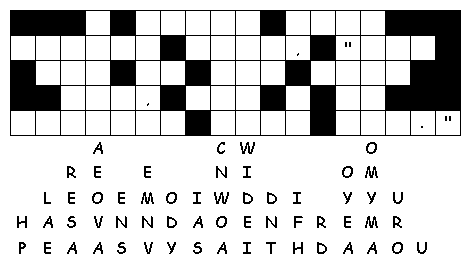

This week's lessons: Genesis 1:1-5, Psalm 29, Acts 19:1-7, Mark 1:4-11
This
week's lessons: Genesis
1:1-5, Psalm
29, Acts
19:1-7, Mark
1:4-11
Elementary School Pew-work
N
R S V L M B D J A V W H
|
(Mark 1:9-11) In those days Jesus came from Nazareth of Galilee and was baptized by John in the Jordan. And just as he was coming up out of the water, he saw the heavens torn apart and the Spirit descending like a dove on him. And a voice came from heaven, "You are my Son, the Beloved; with you I am well pleased." (NRSV) |
Word List DESCENDING NAZARETH BAPTIZED PLEASED BY HEAVENS GALILEE BELOVED SPIRIT JORDAN COMING WATER VOICE THOSE JESUS APART WITH WELL TORN NRSV MARK LIKE JUST JOHN FROM DOVE DAYS CAME YOU WAS THE SON SAW OUT HIM AND UP OF MY |
from http://www.efree.mb.ca/lectionarypuzzles free to distribute for free with this notice. Words are in a straight line left to right or top to bottom |
||
1. Who is the
Christ?
_____________________________________________________________
2.
What happened when Jesus prayed at his own
baptism?
_____________________________________________________________
3.
What did the people
hear?
_____________________________________________________________
Questions taken from Sunday School Lessons; http://www.sundayschoollessons.com/baplord.htm
|
 Down: 1. he saw the _______ open, 3. from ________ in Galilee |
Created by Puzzlemaker at DiscoverySchool.com
Next week: I Samuel 3:1-10, (11-20), Psalm 139:1-6, 13-18, I Corinthians 6:12-20, John 1:43-51;